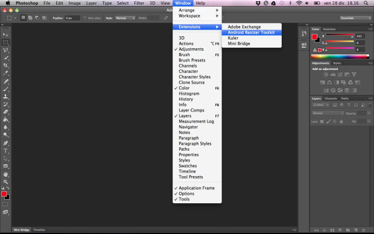
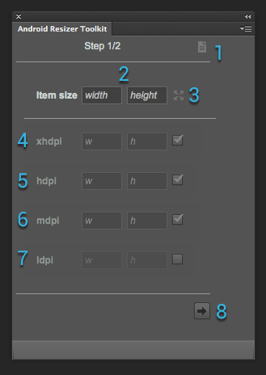
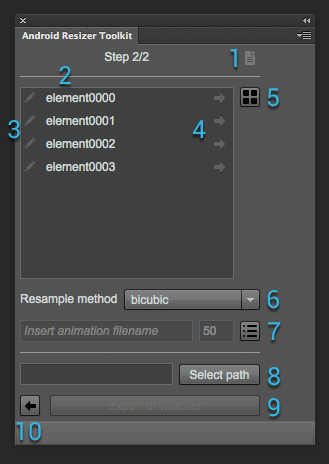
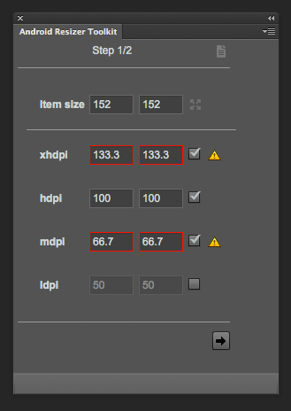
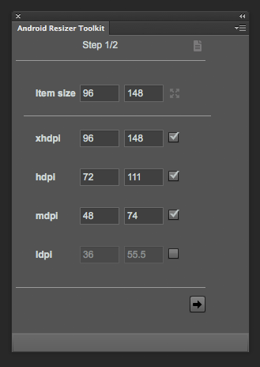
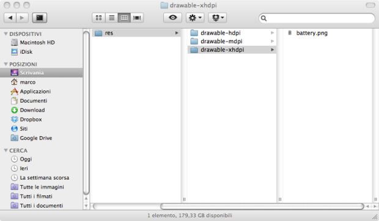
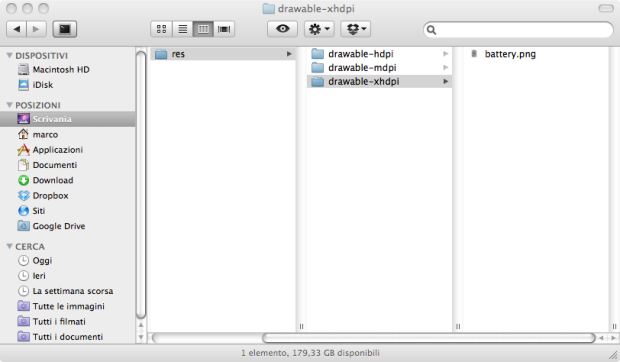
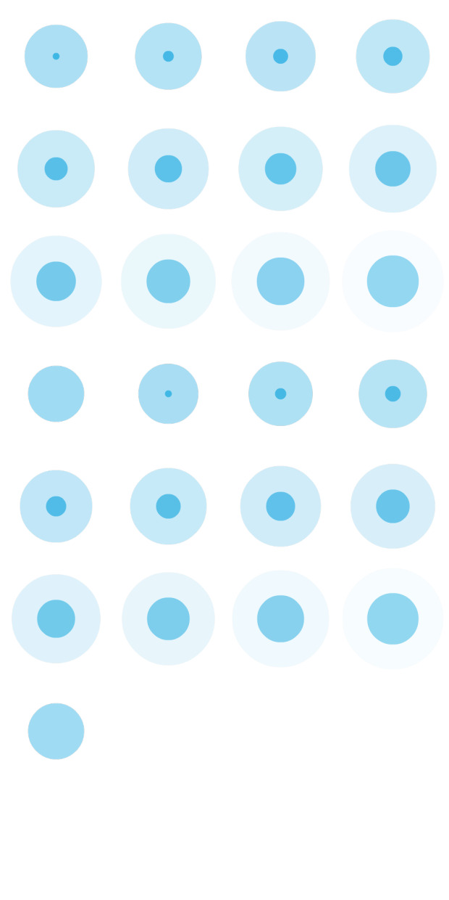
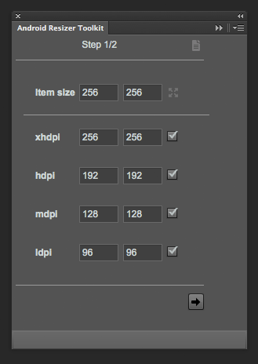
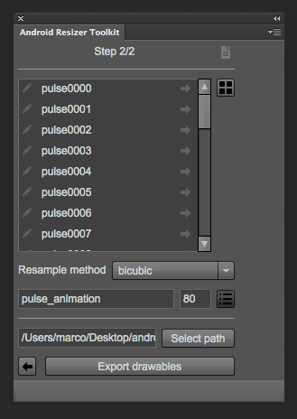

Android Resizer Toolkit Documentation
I love Android, but one of the most boring tasks I have to do when designing a UI is to create the full set of drawables for all resolutions; so I've decided to create a simple extension for Photoshop for automating this kind of tasks.
Enter Android Resizer Toolkit
With this panel you will be able to generate a set of icons for the main Android dpi resolutions (xhdpi, hdpi, mdpi, ldpi), from a single image or even from a grid of images. As an example, you can create an animation using your favorite tool (for instance Flash Pro), generate a spritesheet and then export each single image directly in your project (the tool will take care of creating the corresponding drawable folders if they do not exist).Download
The extension can be freely downloaded as a .zip file.Opening the Panel
To open the panel from Photoshop, choose Window > Extensions > Android Resizer Toolkit as shown in the following picture. {kind=link}
The Panel Interface
Exporting drawables for Android is divided in two steps:- Step 1: setting the section size and choosing the drawables size
- Step 2: setting the filenames, choosing the export path and generating the drawables
Step 1 - Setting the section size and choosing the drawables size
The first section of the panel lets you define the dimensions for the drawables. Here's the main features:
- help button: this will link to the online documentation (this page)
- item size fields: these two text input fields let you define the width and height attributes for a single exported element
- set document size button: clicking on this icon will set the Item size fields to the active document dimensions. This comes handy if you plan to export the document as a single image (for instance, an icon)
- xhdpi fields: if enabled (by selecting the checkbox), will export the images in a folder named drawable-xhdpi. The two text inputs will set the size of the images
- hdpi fields: as above, but the target folder will be drawable-hdpi
- mdpi fields: as above, but the target folder will be drawable-mdpi
- ldpi fields: as above, but the target folder will be drawable-ldpi
- next button: this will open the second step of the resizer panel.
Step 2 - Setting the filenames, choosing the export path and generating the drawables
Once the drawable dimensions are set you have access to the second panel: - help button: as for panel 1, this will link to the online documentation (this page)
- name list: the file name for each generated drawable. Clicking on the name will let you edit it. If you leave a text input empty, no drawable will be generated for that section (handy when you have some empty sections you don't want to export)
- click to edit/clear button: clicking on this button automatically clear the corresponding textfield and focus on it for typing. It's also useful if you want to exclude some items from exporting by clearing the name
- generate sequential names button: clicking on this button will rename the full list with the corresponding item, adding a four digit sequential number. This feature is usually chosen if you plan to export a sequence of frames (for instance for a progress bar)
- enable/disable rollover item selection: if enabled, rolling over an item on the list will select the corresponding area on the active document
- resample method menu: this will select the method for resizing the images. The default value is bicubic
- animation-list export parameters: if enabled (by selecting the toggle button), an animation-list xml file will be exported in the drawable folder of the export path (the directory will be generated if it does not exists). The first text input will be used as the name of the file, while the second one id the duration (in ms) for each item in the sequence
- export path: the directory where all the drawables will be exported. You can choose your Android project res folder and the extension will take care of the rest
- export drawable button: when you are ready, simply click on this button to start the export process.
- back button: this will open the first step of the resizer panel.
Size Validation
When you insert the drawable size, you will get a warning if some size won't be an integer, as shown below. Please note that you will be able to export the files anyway, but the width or height will be rounded. Also note that you can export some files that will have a higher width or height than the original section, but these will obviously appear pixelated.
Tutorial - Exporting an Icon
This tutorial shows how to export a single image with Photoshop as a multi resolution drawable in your android project. It is based on Photoshop CS6 (but it can be easily ported to Photoshop CS5).1. Download and Install the Extension
If you don't have the extension installed in Photoshop, please download it now (it's free!).2. Opening the Panel
We will be using a battery image, like the following one (96x148 pixels):Open this file in Photoshop and then the Android Resizer Toolkit (Window > Extensions > Android Resizer Toolkit). Click the Set document size button; width and height should be filled with 96 and 148 values. We want the mdpi drawable to be 48dpi wide, so insert this value in the first text input in mdpi. All the fields should be auto-completed, as shown in picture 2.  Click the Next button to open step 2.
{kind=link}
3. Naming and Exporting the Icon
The list should have a single item named element0000. Click on it and rename it battery. Leave the Resample method value as it is. Open the export directory selection by clicking on the Select path button. Navigate to your chosen directory and confirm (for instance your android project res folder).
You are now ready to export the images. Click on Export drawables and let Photoshop do the rest. An image named battery.png will be generated for each selected resolution, as shown in picture 4.

Open the export directory selection by clicking on the Select path button. Navigate to your chosen directory and confirm (for instance your android project res folder).
You are now ready to export the images. Click on Export drawables and let Photoshop do the rest. An image named battery.png will be generated for each selected resolution, as shown in picture 4.

{kind=link}
Tutorial – Exporting an Animation-List Sequence
This tutorial shows how to export a sequence of images with Photoshop as a multi resolution drawable animation-list in your android project. It is based on Photoshop CS6 (but it can be easily ported to Photoshop CS5).1. Download and Install the Extension
If you don't have the extension installed in Photoshop, please download it now.2. Opening the Panel
First of all open the following document (1024x2048 pixels) in Photoshop.  The image has four columns and eight rows, each sized 256x256 pixels. Some elements are empty: we will see later how to exclude them from the export process. Open the Android Resizer Toolkit and insert 256 in both width and height attributes. Enable ldpi exporting by clicking on the corresponding checkbox. Insert 265 in the first text input of xhdpi; all the other elements should be auto-completed correspondingly.{kind=link}
 Click the Next button to proceed to the next panel.
3. Setting the Animation Attributes
The new panel should display a list with 32 elements (element0000 to element0031); to get the exact area corresponding to each element in the list, you can toggle the Enable selection rollover button next to the list. Click on any element of the list, rename it pulse and then click on the corresponding arrow. The full list will be renamed (pulse0000 to pulse0031). Now, exclude the empty sections from the export process, by removing the text from the last seven elements in the list (pulse0025 to pulse0031); to speed the process, you can click on the pencil button on each list element. Toggle the Export animation-list button and insert a filename (I have used pulse-anim) and a frame duration (in my case 80ms).